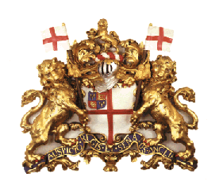
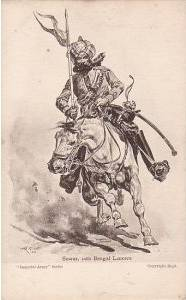
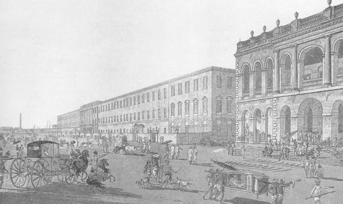
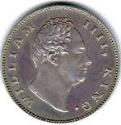
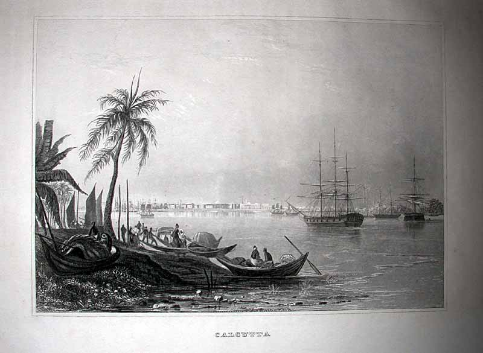
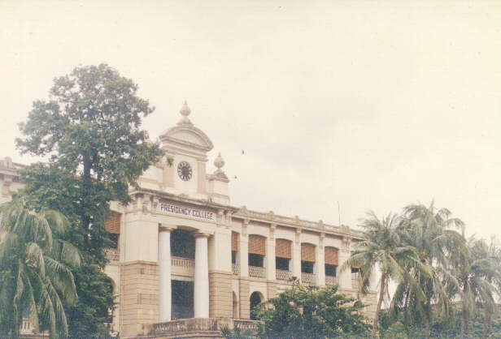
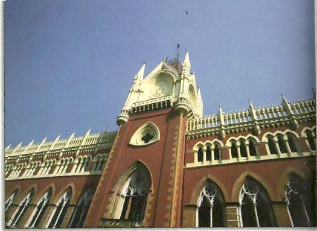
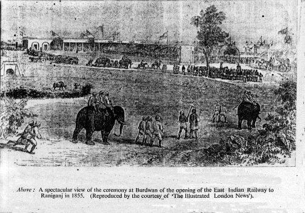
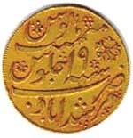

When news of the fall of Calcutta reached Fort St. George in Madras, an expeditionary force under Robert Clive and Admiral Charles Watson was sent. They took the city back from Nawab Sirajuddaulah on January 2, 1757. On June 23, 1757, the small Company army met the Nawab's vast army at Plassey. The Nawab's commander-in-chief, Mir Jafer, defected to the English lines. The Battle of Plassey is widely regarded as the first step towards the establishment of the British Empire in India.

The Company built a second Fort William, clearing a large tract of forest around it so the guns could fire in all directions. This large tract lives on as the Maidan — Calcutta's primary address for all outdoor activities. Fort William never fired a single shot in war in its history. In the same year, Raja Nobo Kissen Deb of Sovabazar celebrated the first public Durga Puja in honour of Clive. Thus began the liveliest festival of the city.

In 1764, Clive defeated the combined forces of the Nawabs of Bengal and Oudh and the Mughal Emperor at Buxar. In 1765, the Mughal Empire signed a treaty granting the Company the right to collect taxes in Bengal, Bihar and Orissa. In 1773, Parliament passed the Regulating Act acknowledging Company rule over Bengal. Warren Hastings became the first Governor-General.

In 1773, Calcutta began exporting opium to China. In 1813, the Company's monopoly on trade with India ended, bringing in hundreds of Scots entrepreneurs. In 1833, the Company lost its trading rights but was entrusted with the government of British India under a Governor-General.


The Asiatic Society was formed in 1784 for the study of Asian art, culture and literature. In 1817, Hindu philanthropists founded the Hindoo College — renamed Presidency College in 1855 — which became a school of revolutionary thought. In 1835, Jesuits opened St. Xavier's College. Sanskrit College and Calcutta Madrasah continued traditional education. The juxtaposition of such institutions helped make the Calcuttan educated simultaneously in oriental and occidental cultures.


The Ballygunge Cricket Club was established in 1792, now the Calcutta Cricket Club — the oldest cricket club outside the United Kingdom. The Dum Dum Golfing Club, now Royal Calcutta Golf Club, was established in 1829. In 1857, the First War of Independence erupted across northern India. In 1858, the East India Company ended.

